Contents
- Solver Demos
- Example ROfRhoAndFt
- Example ROfFxAndFt
- Example FluenceOfRhoAndZ
- Example FluenceOfRhoAndZ
- Example PHDOfRhoAndZ
- Example AbsorbedEnergyOfRhoAndZ
- Example ROfRho
- Example ROfRhoAndT
- Example ROfFxAndT
- Example ROfFx (single set of optical properties)
- Example ROfFx (multiple sets of optical properties)
- Example ROfFx (multiple optical properties, varying mua as a function of wavelength)
- Example ROfFx
Solver Demos
Script for demoing use of the VTS solvers within Matlab
clear all clc dbstop if error; startup();
Example ROfRhoAndFt
Evaluate ROfRhoAndFt with one set of optical properites
op = [0.01 1.2 0.8 1.4]; rho = 10; % s-d separation, in mm ft = 0:0.01:0.5; % range of temporal frequencies in GHz VtsSolvers.SetSolverType('PointSourceSDA'); test = VtsSolvers.ROfRhoAndFt(op, rho, ft); f = figure; subplot(3,1,1); plot(ft, [real(test) -imag(test)] ); title('Reflectance vs f_t'); ylabel('R(f_t)'); xlabel('f_t'); lgnd = legend('Real','Imaginary'); set(lgnd, 'FontSize', 12); subplot(3,1,2); plot(ft, abs(test)); title('Reflectance amplitude vs f_t'); ylabel('R(f_t) Amplitude'); xlabel('f_t'); subplot(3,1,3); plot(ft, -angle(test));% or 'plot(ft, atan2(imag(test),real(test)))' title('Reflectance phase vs f_t'); ylabel('R(f_t) Phase'); xlabel('f_t'); set(f,'Name','Frequency-domain reflectance');

Example ROfFxAndFt
Evaluate ROfFxAndFt with one set of optical properites
op = [0.01 1 0.8 1.4]; fx = 0; % spatial frequency in 1/mm ft = linspace(0,0.5,51); % temporal frequency in GHz test = VtsSolvers.ROfFxAndFt(op, fx, ft); f = figure; subplot(3,1,1); plot(ft, [real(test) -imag(test)] ); title('Reflectance vs f_t'); ylabel('R(f_t)'); xlabel('f_t'); legend('Real','Imaginary'); subplot(3,1,2); plot(ft, abs(test)); title('Reflectance amplitude vs f_t'); ylabel('R(f_t) Amplitude'); xlabel('f_t'); subplot(3,1,3); plot(ft, -angle(test));% or 'plot(ft, atan2(imag(test),real(test)))' title('Reflectance phase vs f_t'); ylabel('R(f_t) Phase'); xlabel('f_t'); set(f,'Name','ROfFxAndFt');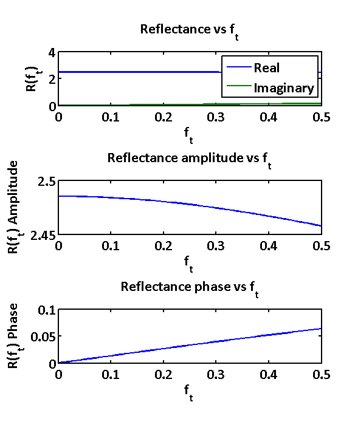
Example FluenceOfRhoAndZ
Evaluate FluenceOfRhoAndZ
rhos = 0.1:0.1:10; % s-d separation, in mm zs = 0.1:0.1:10; % z range in mm wv = 450:0.5:1000; % create a list of chromophore absorbers and their concentrations absorbers.Names = {'HbO2', 'Hb', 'H2O'}; absorbers.Concentrations = [70, 30, 0.8 ]; % create a scatterer (PowerLaw, Intralipid, or Mie) scatterer.Type = 'PowerLaw'; scatterer.A = 1.2; scatterer.b = 1.42; % % or % scatterer.Type = 'Intralipid'; % scatterer.vol_frac = 0.5; % % or % scatterer.Type = 'Mie'; % scatterer.radius = 0.5; % scatterer.n = 1.4; % scatterer.nMedium = 1.0; op = VtsSpectroscopy.GetOP(absorbers, scatterer, wv); test = VtsSolvers.FluenceOfRhoAndZ(op, rhos, zs); f = figure; imagesc(log(squeeze(test(:,1,:)))); set(f,'Name','Fluence of Rho and z');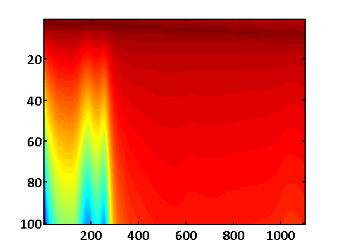
Example FluenceOfRhoAndZ
Evaluate FluenceOfRhoAndZ
op = [0.01 1 0.8 1.4]; rhos = linspace(0.1,19.9,100); % s-d separation, in mm zs = linspace(0.1,19.9,100); % z range in mm VtsSolvers.SetSolverType('DistributedGaussianSourceSDA'); test = VtsSolvers.FluenceOfRhoAndZ(op, rhos, zs); xs = [-fliplr(rhos(2:end)),rhos]; % xs = [-rhos(end:-1:2), rhos]; % f = figure; imagesc(log(test)); f = figure; imagesc(xs,zs,... log([fliplr(test(:,2:end)),test])); axis image title('Fluence of \rho and z'); xlabel('\rho [mm]') ylabel('z [mm]') set(f,'Name','Fluence of Rho and z');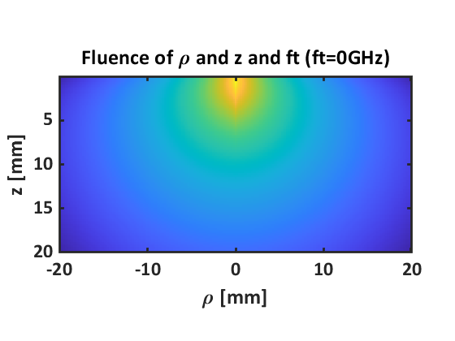
Example PHDOfRhoAndZ
Evaluate PHDOfRhoAndZ
op = [0.01 1 0.8 1.4]; rhos = linspace(0.1,19.9,100); % s-d separation, in mm zs = linspace(0.1,19.9,100); % z range in mm VtsSolvers.SetSolverType('DistributedGaussianSourceSDA'); test = VtsSolvers.PHDOfRhoAndZ(op, rhos, zs, 10); f = figure; imagesc(rhos, zs, log(test)); axis image; title('Photon Hitting Density of \rho and z'); xlabel('\rho [mm]') ylabel('z [mm]') set(f,'Name','PHD of Rho and z');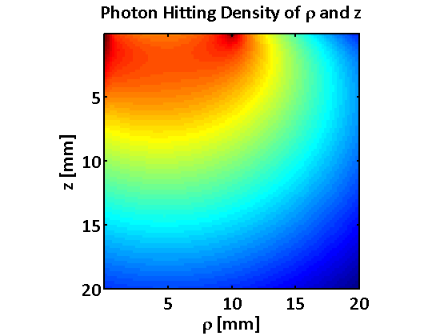
Example AbsorbedEnergyOfRhoAndZ
Evaluate AbsorbedEnergyOfRhoAndZ
op = [0.1 1 0.8 1.4]; rhos = linspace(0.1,19.9,100); % s-d separation, in mm zs = linspace(0.1,19.9,100); % z range in mm VtsSolvers.SetSolverType('PointSourceSDA'); xs = [-fliplr(rhos(2:end)),rhos]; test = VtsSolvers.AbsorbedEnergyOfRhoAndZ(op, rhos, zs); % f = figure; imagesc(log(test)); f = figure; imagesc(xs, zs, log([fliplr(test),test])); axis image; title('Absorbed Energy of \rho and z'); xlabel('\rho [mm]') ylabel('z [mm]') set(f,'Name','Absorbed Energy of Rho and z');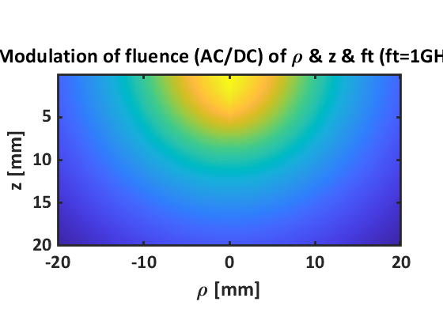
Example ROfRho
Evaluate ROfRho with two sets of optical properites
op = [[0.01 1 0.8 1.4]; [0.1 1 0.8 1.4]; [1 1 0.8 1.4]]; rho = 0.5:0.05:9.5; %s-d separation, in mm %VtsSolvers.SolverType = 'DistributedPointSourceSDA'; test = VtsSolvers.ROfRho(op, rho); f = figure; plot(rho, test); set(f,'Name','R of Rho'); % create the legend with just the mua value from the optical properties options = [{'FontSize', 12}; {'Location', 'NorthEast'}]; PlotHelper.CreateLegend(op(:,1), '\mu_a: ', 'mm^-^1', options); title('Reflectance vs \rho for various optical properties'); ylabel('R(\rho)'); xlabel('\rho');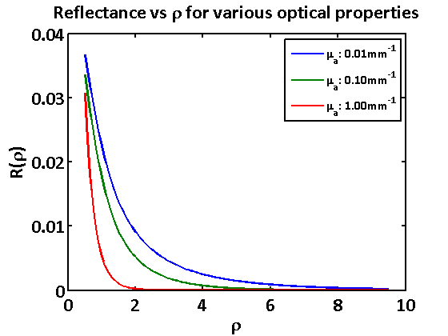
Example ROfRhoAndT
Evaluate ROfRhoAndT at one s-d separation and two sets of optical properites
op = [[0.1 1.2 0.8 1.4]; [0.2 1.2 0.8 1.4]]; rho = 10; %s-d separation, in mm t = 0:0.001:0.5; % range of times in ns test0 = VtsSolvers.ROfRhoAndT(op, rho, t); f = figure; plot(t,squeeze(test0)); set(f,'Name','R of Rho and t'); title('Reflectance vs time for various optical properties'); ylabel('R(t)'); xlabel('Time, t [ns]');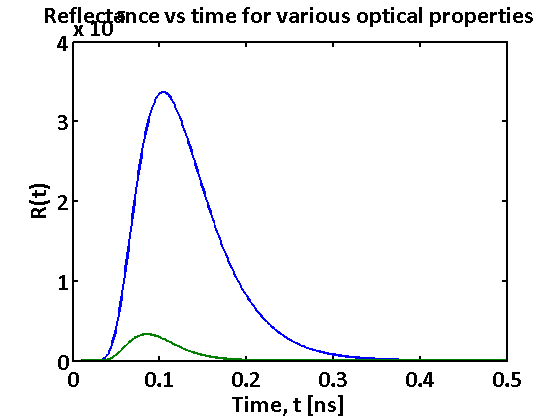
Example ROfFxAndT
Evaluate ROfFxAndT one set of optical properites
op = [0.1 1 0.8 1.4]; fx = linspace(0,0.5,11); % range of spatial frequencies in 1/mm t = linspace(0,0.05,501); % range of times in ns test = VtsSolvers.ROfFxAndT(op, fx, t); f = figure; plot(t,squeeze(test(:,:,:))); set(f,'Name','R of fx and t (Reflectance vs time)'); title('Reflectance vs time at various spatial frequencies'); ylabel('R(f_x, t)'); xlabel('Time, t [ns]'); %Create the legend dynamically options = [{'FontSize', 12}; {'Location', 'NorthEast'}]; PlotHelper.CreateLegend(fx, 'f_x = ', 'mm^-^1', options); t = [0.01 0.05]; test = VtsSolvers.ROfFxAndT(op, fx, t); f = figure; plot(fx,squeeze(test)); set(f,'Name','R of fx and t (Reflectance vs spatial frequency)'); title('Reflectance vs spatial frequency at 0.01 and 0.05 ns'); ylabel('R(f_x, t)'); xlabel('Spatial frequency, f_x [mm^-^1]'); %Create the legend dynamically - can be replaced by PlotHelper.CreateLegend(t, 't = ', 'ns', ''); l2 = cell(1,length(t)); %create a 1xlength(t) cell array to hold the string values for i=1:length(t) str = sprintf('t = %2.2fns', t(i)); l2{1,i} = str; end legend(l2, 'FontSize', 12);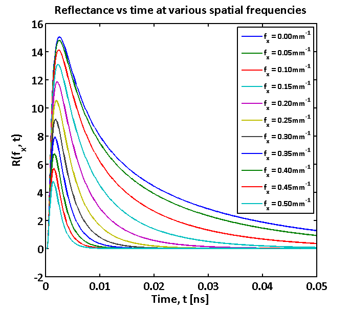 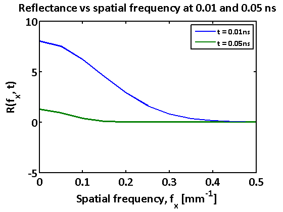
Example ROfFx (single set of optical properties)
Evaluate ROfFx with single set of optical properties
fx = 0:0.001:0.2; % range of spatial frequencies in 1/mm op = [0.1 1.2 0.8 1.4]; test1 = VtsSolvers.ROfFx(op, fx); f = figure; plot(fx, test1); set(f,'Name','R of fx'); title('Reflectance vs spatial frequency'); ylabel('R(f_x)'); xlabel('Spatial frequency, f_x [mm^-^1]');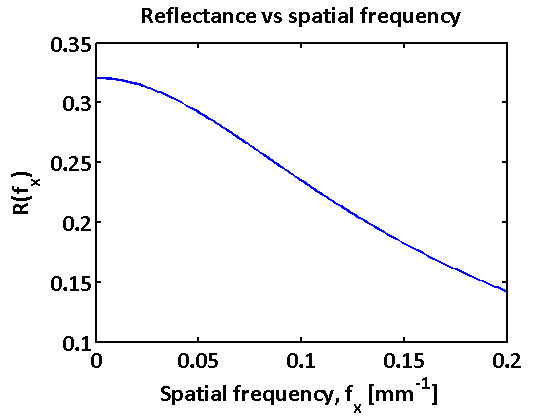
Example ROfFx (multiple sets of optical properties)
Evaluate ROfFx with multiple sets of optical properties, varying mua linearly
fx = 0:0.001:0.2; % range of spatial frequencies in 1/mm mua = (0:0.01:0.1)'; op = repmat([0 1.2 0.8 1.4],[length(mua) 1]); op(:,1) = mua; test2 = VtsSolvers.ROfFx(op, fx); f = figure; plot(fx, test2); set(f, 'Name', 'R of fx (varying mua linearly)'); title('Reflectance vs spatial frequency'); ylabel('R(f_x)'); xlabel('Spatial frequency, f_x [mm^-^1]');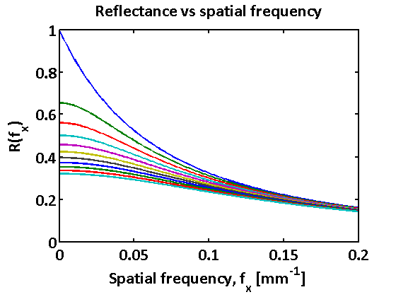
Example ROfFx (multiple optical properties, varying mua as a function of wavelength)
Call ROfFx with multiple sets of optical properties, varying mua as a function of wavelength
fx = 0:0.05:0.2; % range of spatial frequencies in 1/mm wv = 450:0.5:1000; nwv = length(wv); % create a list of chromophore absorbers and their concentrations absorbers.Names = {'HbO2', 'Hb', 'H2O'}; absorbers.Concentrations = [70, 30, 0.8 ]; % create a scatterer (PowerLaw, Intralipid, or Mie) scatterer.Type = 'PowerLaw'; scatterer.A = 1.2; scatterer.b = 1.42; % % or % scatterer.Type = 'Intralipid'; % scatterer.vol_frac = 0.5; % % or % scatterer.Type = 'Mie'; % scatterer.radius = 0.5; % scatterer.n = 1.4; % scatterer.nMedium = 1.0; op = VtsSpectroscopy.GetOP(absorbers, scatterer, wv); % plot the absorption spectrum f = figure; plot(wv, op(:,1)); set(f, 'Name', 'R of fx (plot absorption spectrum)'); title('Absorption vs wavelength'); ylabel('\mu_a(\lambda)'); xlabel('Wavelength, \lambda [nm]'); % plot the log of the absorption spectrum f = figure; semilogy(wv, op(:,1)); set(f, 'Name', 'R of fx (plot log of the absorption spectrum)'); title('log(Absorption) vs wavelength'); ylabel('\mu_a(\lambda)'); xlabel('Wavelength, \lambda [nm]'); % plot the scattering spectrum f = figure; plot(wv, op(:,2)); set(f, 'Name', 'R of fx (plot scattering spectrum)'); title('Reduced scattering vs wavelength'); ylabel('\mu_s^''(\lambda)'); xlabel('Wavelength, \lambda [nm]'); % calculate and plot the resulting reflectance spectrum at each frequency test3 = VtsSolvers.ROfFx(op, fx); f = figure; plot(wv, test3); set(f, 'Name', 'R of fx (plot resulting reflectance spectrum at each frequency)'); title('SFD Reflectance vs wavelength'); ylabel('R(\lambda)'); xlabel('Wavelength, \lambda [nm]'); options = {'FontSize', 12}; PlotHelper.CreateLegend(fx, 'f_x = ', 'mm^-^1', options);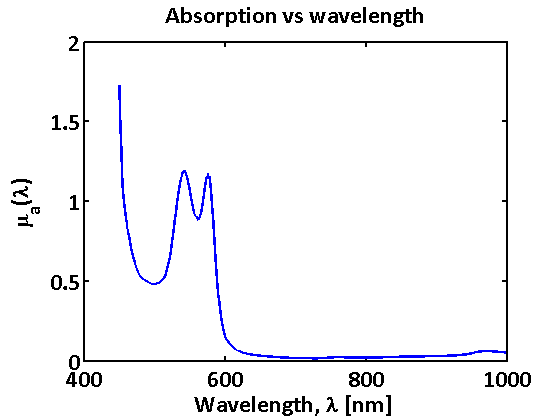 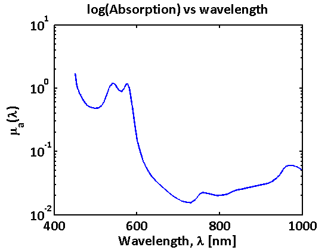 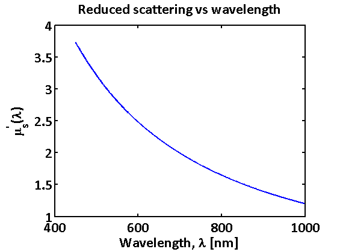 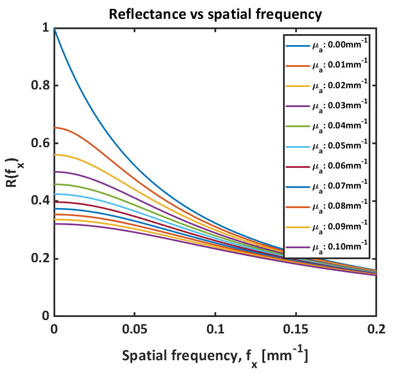
Example ROfFx
Call planar reflectance with multiple sets of optical properties, varying the scattering prefactor as a function of wavelength
fx = 0; % spatial frequency in 1/mm wv = 450:0.5:1000; % create a list of chromophore absorbers and their concentrations absorbers.Names = {'HbO2', 'Hb', 'H2O'}; absorbers.Concentrations = [70, 30, 0.8 ]; % create a scatterer (PowerLaw, Intralipid, or Mie) scatterer.Type = 'PowerLaw'; scatterer.A = 1.0; scatterer.b = 1.42; A = 0.5:0.25:2.5; test4 = zeros([length(A) length(wv)]); for i=1:length(A) scatterer.A = A(i); op = VtsSpectroscopy.GetOP(absorbers, scatterer, wv); test4(i,:) = VtsSolvers.ROfFx(op, fx); end f = figure; plot(wv, test4'); set(f, 'Name', 'Planar reflectance'); title('SFD Reflectance vs wavelength'); ylabel('R(\lambda)'); xlabel('Wavelength, \lambda [nm]'); options = [{'Location', 'NorthWest'}; {'FontSize', 12}; {'Box', 'on'}]; PlotHelper.CreateLegend(A, '\mu_s''(1000nm) = ', 'mm^-^1', options);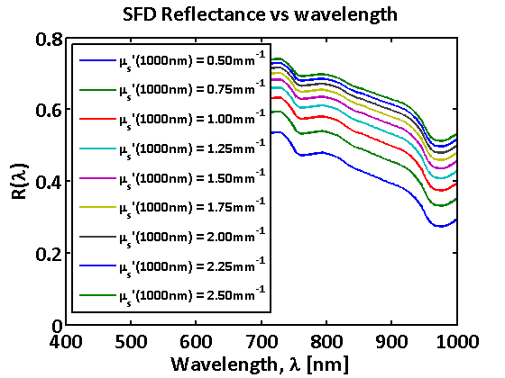